ABOUT ME
I have always loved programming. As a kid I was really into technical stuff, tearing apart all electronics toys and trying to rebuild them (99% of the time with no success).
This passion led me to technical shool in my city where I was learning to become electronics technician. In that time, having around 17 years old, I began my first experiments with programming.
My journey with code started from learning C++, using whatever I could find on the internet. Than my hunger of knowledge forced me to learn other languages.
For five years I have been studying electronics and computer science on the Silesian University of Technology. That was the time when I gained a lot of knowledge and also met my wife.
Today I am working for international company in automotive industry as an software tester. Working with code is my daily basis such as making my life easier by automating as much of my work as possible.
If you want to know more about me feel free to hover other dots on my timeline.
Technical shool (2010 - 2014)
After finishing primary education I decided to learn electronics. There was a technical shool in my city which offered just that. For four years I have been learning about flow of the current, electronics elements, circuits and semiconductors. But even if I really liked electronics something started to pull me to programing.
So I began to learn programming on my own. I started from C++ since that was more tempting programming language I knew except of ASSEMBLER. And so, as always when you are beginning something new I struggled a lot to force my very simple programs to work. I gave up idea of becoming programmer and 6 moths later started to learn again, with more humility. And than it clicked.
Another big moment in my coding life was when I discovered micro controllers programming. Finally I could bring my code to physical world. And so I started to create fairly simple circuits with some buttons, displays and motors to see what this little blocks are capable of.
Silesian University of Technology (2014 - 2019)
For my primary field of study I have chosen electronics and telecommunication. Mostly because I had experience in tis field and because all my best friends chose it.
This studies included some coding lessons so I was specially exited with those. Nonetheless most of the time I was spending calculating circuits again. And so, on the second year I have joined science club.
That was the place where I could combine my knowledge of electronics and passion for programming by building robots. Two or three times a year we were taking part in competition (classical robo-sumo). We never won, but it was great fun.
For my master studies I have finally chosen computer science with specialty of internet and network technologies. I finally studied about algorithms, AI, databases and so on. And that was the time when I have decided to work to become a web developer.
Aptiv Services Poland (2017 - now)
During studying electronics I started intern in international automotive company. This intern last for almost 2 years (until I finished study). That was the time of gaining a ton of experience in work, programming, problem solving and code development. It forced me to learn new languages, tools and methodologies but also teamwork.
After two years of intern I got a job as an software tester. It is very challenging work which requires huge programming knowledge, huge knowledge of the system under test and great attention to details.
Still, even if this work gives me a lot of satisfaction I don't feel it to be my final shore. And so I am spending my free time to work my way up to become web developer.